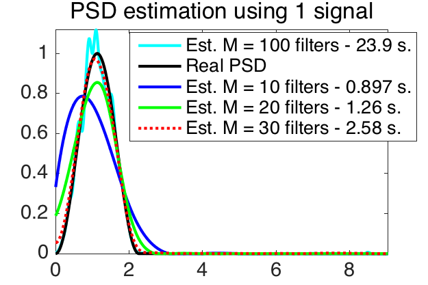

 
<!DOCTYPE html>
<html lang="en">
<head class="include" file="../include/header.html">
<link rel="stylesheet" href="../include/bootstrap.min.css">
<link rel="stylesheet" href="../include/bootstrap-theme.min.css">
<link rel="stylesheet" href="../include/bootstrap-select.min.css">
<link rel="stylesheet" href="../include/style.css" type="text/css">
<link rel="stylesheet" href="../include/highlight.css" type="text/css">
<meta charset="utf-8">
<meta http-equiv="X-UA-Compatible" content="IE=edge">
<meta name="viewport" content="width=device-width, initial-scale=1">
<meta NAME="keywords" CONTENT="reproducible, research, platform, rrp, rr, reproducible research, reproducible research platform, matlab, code, mat2doc, science, knowledge"/>

<title>ESTIMATION_PSD - Estimation of the power spectrum density</title>
</head>


<!-- body must stay hidden until all include parts are loaded -->
<body style="display:none;">
<!-- Wrap the content into responsive container -->
<div class="container">
<!-- Include main navigation -->
    <div class="masthead include" file="../include/mainnav.html"></div>
        <div class="row">
            <div class="col-md-2" id="codeswitch"><div id="menutitle"><a href="estimation_psd_code.html">View the code</a></div>
</div>
            <div class="btn btn-large btn-success span22-doc">
                <a style="color: #FFFFFF" href="../archive/#PACKAGE#.zip">Download <font color="red">r<sup>2</sup>&pi;</font> archive for windows</a>
                <a style="color: #FFFFFF" href="../archive/#PACKAGE#.tgz"> or for unix </a> 
            </div>
        </div>
        <div class="row">
            <div class="col-md-2">
                <div class="include" file='contentsmenu.html'></div>
                <br/>
                <div id="seealso"><p></p></div>
                <br/>
            </div>
            <div class="col-md-10">
           
                    <h1 class="title">ESTIMATION_PSD - Estimation of the power spectrum density</h1>

<div class="section" id="xxxdescription">
<h2>Description</h2>
<p>Authors: Nathanael Perraudin and Pierre Vandergheynst</p>
<p>Date: January 2016</p>
<p>Paper: Stationary signal processing on graphs</p>
</div>
<div class="section" id="abstract-of-the-paper">
<h2>Abstract of the paper</h2>
<p>Graphs are a central tool in machine learning and information
processing as they allow to conveniently capture the structure of
complex datasets. In this context, it is of high importance to develop
flexible models of signals defined over graphs or networks. In this
paper, we generalize the traditional concept of wide sense stationarity
to signals defined over the vertices of arbitrary weighted undirected
graphs. We show that stationarity is intimately linked to statistical
invariance under a localization operator reminiscent of translation. We
prove that stationary signals are characterized by a well-defined Power
Spectral Density that can be efficiently estimated even for large
graphs. We leverage this new concept to derive Wiener-type estimation
procedures of noisy and partially observed signals and illustrate the
performance of this new model for denoising and regression.</p>
</div>
<div class="section" id="this-experiment">
<h2>This experiment</h2>
<p>Figure 1 shows the results of our PSD-estimation algorithm on a
<span class="math">\(10\)</span>-nearest neighbors graph of <span class="math">\(20'000\)</span> nodes (sensor type) and only
<span class="math">\(1\)</span> signal. We compare the estimation using frames of <span class="math">\(10\)</span>, <span class="math">\(20\)</span>, <span class="math">\(30\)</span>,
<span class="math">\(100\)</span> Gaussian filters. <span class="math">\(\sigma\)</span> and <span class="math">\(\tau\)</span> are adapted to the number
of filters. For this experiment <span class="math">\(K_2\)</span> is set to <span class="math">\(10\)</span> and the Chebysheff
polynomial order is <span class="math">\(30\)</span> (Except for <span class="math">\(M=100\)</span> where we took <span class="math">\(100\)</span>). The
estimated curves are smoothed versions of the PSD. Since the original
PSD is smooth, the estimation is sufficient to construct approximate
Wiener filters. Note that with <span class="math">\(100\)</span> filters, the windows are very
concentrated in the spectral domain and broad in the vertex domain.
Thus, we loose the averaging effect of the algorithm resulting in a PSD
looking like the Fourier transform of the original signal.</p>
<div class="figure align-center">

<p class="caption">Results</p>
<div class="legend">
PSD estimation on a graph of <span class="math">\(20'000\)</span> nodes with <span class="math">\(1\)</span> measurements.
Our algorithm is able to successively estimate the PSD of a signal.</div>
</div>
<p><em>This code produces the following output</em>:</p>
<pre class="literal-block">
[Warning: MATLAB cannot use OpenGL for printing when started with the '-nodisplay' option.]
[&gt; In inputcheck (line 143)
  In print (line 153)
  In gsp_plotfig (line 86)
  In plotexec (line 154)]
</pre>
</div>
<H2>References:</H2>


<p><a name="perraudin2016stationary"></a>

N.&nbsp;Perraudin and P.&nbsp;Vandergheynst.
 Stationary signal processing on graphs.
 In <em>Infoscience - EPFL</em>, 2016.

</p>


            </div>
        </div>

        <div class="include" file="../include/footer.html"></div>
    </div>
</div>
<!-- These two have to be here to dynamically load the included parts -->
<script src="../include/jquery.min.js"></script>
<script src="../include/bootstrap-select.min.js"></script>
<script src="../include/rrp.js" type="text/javascript"></script>
</body>
</html>


